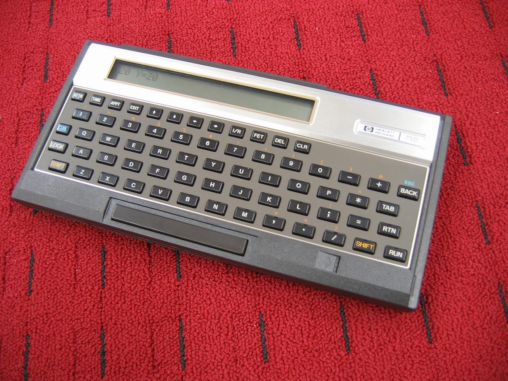
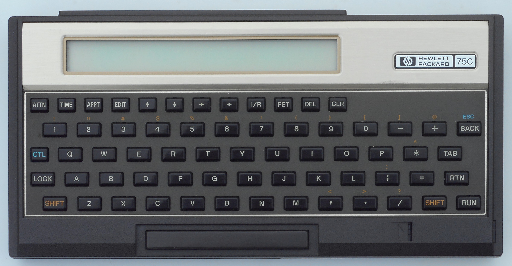

HP-75C / HP-75D Portable Computer
A handheld BASIC computer you load with software by sliding magnetic cards beside the spacebar — then it wakes up on a schedule to run your programs

Overview
The HP-75C (1982) and HP-75D (1984–86) were handheld computers programmable in BASIC, made by Hewlett-Packard. Their defining interaction is physical-token software loading: a manually operated magnetic card reader is built into the body just to the right of the spacebar, and each card carries 2×650 bytes of program data. To load a program the user physically slides a magnetic card through the reader — software arrives as a thing you hold and push into the machine. Four expansion ports (1 RAM, 3 ROM) let you snap in modules, and the HP-75D added a port for a barcode wand used to sweep printed bar-code data directly into the machine, typically for inventory work.
Beneath the token rituals sits an odd personality for 1982: the BASIC interpreter acts as a primitive operating system (file handling for RAM, cards, or cassettes/disks via the HP-IL interface), and the machine includes an appointment scheduler with alarms that can execute BASIC programs at scheduled times. BYTE magazine (Sept 1983) framed this as real-time control — you can make the machine itself run a program when the clock says so, a scheduled-automation idea years before mainstream smart devices.
The machine is a comparatively large handheld: 10.1 x 4.9 x 1.5 inches, a single-line LCD, 48 KiB system ROM, 16 KiB RAM, an 8-bit "Capricorn" CPU, and an HP-IL interface to connect printers, storage, and test equipment. It was expensive ($995 75C / $1,095 75D, roughly $3,300+ today), which limited its popularity relative to the later HP-71B. The PCB carries a hidden KANGAROO silkscreen (75C) and MERLIN (75D) codename.
Deep dive
The card reader beside the spacebar is the heart of the interface. Program cards are 2×650-byte magnetic strips; the user slides one through and the BASIC program is read in. This is the same "software lives on a thing you touch" grammar as the museum's TI-59 (external magnetic card data), but the HP-75 is a full computer and the card reader is built in. The HP-75D extends the token idea outward with a barcode-wand port for sweeping printed bar-coded data directly into programs — an early consumer scan-into-machine gesture years before barcode scanning was ordinary.
The appointment reminder is not a simple alarm. Its alarms can execute BASIC programs, so the HP-75 functions as a low-grade real-time automation appliance: you load code onto the machine (by card or module) and the machine itself decides to run it when the schedule triggers. BYTE called this real-time control in a very portable box. No other artifact in the museum fires user programs on a wall-clock schedule.
HP marketed the HP-75 as a pocket personal computer for engineers and professionals. Its HP-IL interface let it control printers, disk storage, and even electronic test instruments — a small computer as the hub of a lab. Combined with the scheduler, the HP-75 foreshadows the "intelligent personal assistant" and edge-automation devices by decades.
The HP-75 joins the museum's physical-token family (Cauzin Softstrip, Dallas iButton, Rainbow Sentinel dongle, IBM 6:5 dictation discs, Ascom QuickFare tickets) as a device where the software itself travels as a tangible card.
Team & pioneers
- Hewlett-Packard (Corvallis Division). Designer of the HP-75 series; KANGAROO/MERLIN codenames.
Media
